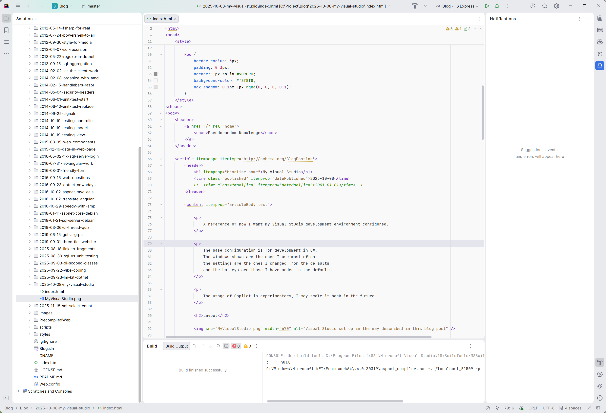

My JetBrains Rider
A reference of how I want my JetBrains Rider development environment configured.
The windows shown are the ones I use most often, the settings are the ones I changed from the defaults, the color scheme shows general use cases and the hotkeys are those I have added to the defaults.
Layout

-
Top left
- Explorer
- Bookmarks
-
Center
- Editor
-
Top right
- Database
- GitHub Copilot Chat
- NuGet
- Notifications
-
Bottom right
- Build
- Services
- Tests
- Problems
Settings
-
Appearance & Behavior > Appearance
- Theme: Islands Light
- Editor color scheme: Rider Light
- Widescreen tool window layout
-
Keymap
- Visual Studio 2022 (see below for changed hotkeys)
-
Editor > Code Editing
- Highlight on Caret Movement; Current scope
-
Editor > Font
- Enable ligatures
-
Editor > General > Editor Tabs
- Show tabs in: One row, and if tabs don't fit: Scroll the tabs panel
- Show pinned tabs in a separate row
-
Editor > General > Typing Assistance
- Auto-format on semicolon
- Auto-format on closing brace
- Auto-format on paste: None
- Smart indent on enter
- Auto-insert pair brackets, parentheses and quotes
- Auto-insert closing brace: On Enter after an opening brace
-
Editor > General > Code Folding
- Show code folding arrows: Always
- Fold by default > General > Imports
- Fold by default > .NET > Preprocessor regions
- Fold by default > XML > HTML 'style' attribute
-
Editor > Inlay Hints
- Default visibility: Push-to-Hint
Color scheme
The colors below show general usages, for the exact configuration download this color scheme file.
-
Background
- F9F9F9 Ordinary
- E4E5ED Active row/symbol
- BDDEAB Searches
- B1D8F6 Selection
- FFA1A1 Breakpoints
-
Foreground
- 26272D Ordinary
- 6D93BB Punctuation
- D5D6DD Unused code
- D52753 Comments
- 23974A Constants (strings/numbers)
- 275FE4 Parameters / Database parameters
- DF631C Global variables / Outer query columns
- CE33C0 Local variables
- 823FF1 Database objects
- 27618D Database columns
-
Underlines (wavy)
- 0099E1 Hints
- C5A332 Warnings
- 3CBC66 Grammar
- FF6480 Errors
-
Stripe marks (in the gutter)
- FF6480 Errors
- FFA1A1 Breakpoints
- FFB011 Bookmarks
-
Text styles
- italic Injected language fragment
Hotkeys
- F6: Build Solution
- F7: Rebuild Solution
- F8: Clean Solution
- Ctrl + T: Go to Declaration or Usages
- Ctrl + Shift + T: Go to Implementation(s)
- Ctrl + Q: Open Settings
- Ctrl + P: Search Everywhere
- Ctrl + Shift + P: Go to File...
- Ctrl + D: Show Context Actions, Show Quick-Fixes plus several others
- Ctrl + Shift + G: Select In...
- Ctrl + W: Insert Inline Proposal